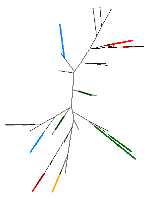
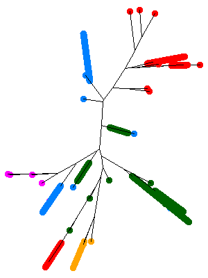

#### Crohn's Disease -- An application for SNP data.
The R script
(<a href="./ex_crohn.r" target="_blank">ex_crohn.r</a>)
demonstrates the settings for SNP data set, runs the <code>phyclust()</code>
by two clusters, calculates distances, builds
a neighbor-joining tree, and applies the <code>plotnj()</code>
to draw the tree by the <code>HAMMING</code> distance.
The data set has 1102 SNP sequences in 8 loci, and 39 sequences are unique.
In the following,
1. The data set is available in <code>phyclust</code> and
original from Hugot, J.P., et al. (2001).
2. The left plot draws the leaf edges in a standard scale, and clusters are
showed in colors but only the unique sequences are clear.
3. The right plot draws the leaf edges in a larger scale, and the duplicated
sequences are condensed to the unique sequences.
<center>
<table>
<tbody>
<tr>
<td> </img> </td>
<td> </img> </td>
</tr>
</tbody>
</table>
</center>
---
<div w3-include-html="../preamble_tail_date.html"></div>